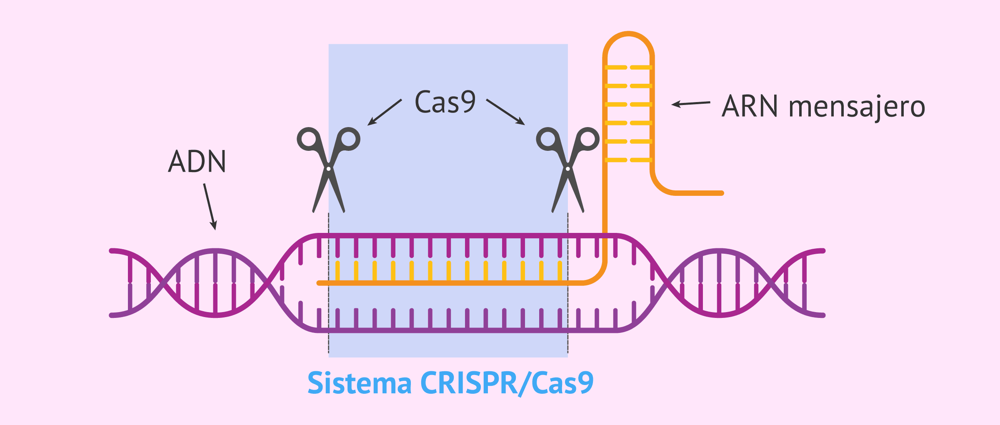

Una mutación es un cambio en la secuencia de ADN de un organismo. Las mutaciones pueden producirse a partir de errores en la replicación del ADN durante la división celular, la exposición a mutágenos o una infección viral. Las mutaciones en la línea germinal (son las que ocurren en los óvulos y los espermatozoides) pueden transmitirse a la descendencia, mientras que las mutaciones somáticas (las que ocurren en las células del cuerpo) no se transmiten.
Las mutaciones genéticas son cambios en el ADN que son fundamentales para entender la evolución, desarrollar tratamientos médicos, crear nuevos medicamentos, mejorar cultivos en biotecnología y estudiar la función de los genes. En resumen, estas mutaciones son esenciales en la ciencia para mejorar la salud, la agricultura y el conocimiento de la biología.
